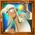
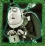
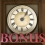

5-Reel 20-line Slots
The object of Ghosts of Christmas is to obtain winning symbol combinations by spinning the reels.
To play the game:
- Line bets are chosen by clicking + and – below Line Bet to increase or decrease the amount.
- Paylines can be activated and their shape displayed by progressively clicking + and – below Lines. Paylines can also be activated by using the numbered buttons on either side of the reels. Selecting a high payline includes all the lower ones too. For example, selecting payline 6 also activates paylines 1 through 5. Clicking Bet Max activates all paylines with the currently selected bet per line and spins the reels.
- Total bet per game round = line bet X active paylines.
- Clicking Spin spins the reels with the current selection of lines and line bets. During the reel spins the Spin button changes intoStop. Clicking Stop ends the spin animation and immediately displays the spin result.
- Reels can also be spun using the Auto Play function. Mouse over the Auto Play button to display the list of options. Select the number of spins to be played automatically or choose ‘Until Feature’ to spin until the Ghosts of Christmas Bonus or Marley's Free Games round is triggered. Clicking on an option starts the Auto Play function. The Auto Play button changes into Stop during the Auto Play mode. The Auto Play mode ends when the reels have been spun the number of times determined by the player, or when the Ghosts of Christmas Bonus or Marley's Free Games round is triggered if you chose ‘Until Feature’, or when you clickStop.
- Wins are calculated according to the paytable. Line win = line bet X corresponding multiplier according to the paytable. Scatter win = total bet X corresponding multiplier according to the paytable. The paytable can be accessed via the Info page.
- On a given payline, only the highest payline winning combination pays while simultaneous winnings on different paylines are accumulated.
- In the case of a winning spin, the Win field displays the accumulating winnings. The Win ticker can be stopped by clicking anywhere on the screen to display the total win amount immediately.
- Payline wins and the total win are also displayed on the strip located at the bottom of the reels or the game window.
Info page:
- Clicking Info opens the reference screen describing different game components. Clicking the arrow buttons at the lower right-hand corner of the screen enables navigating between the different info screens.
- The Paytable screen shows all winning combinations. When opened after a winning spin, the winning symbol combinations (number of symbols and bet multiplier) are highlighted and blink.
- The Marley's Free Games screen describes the symbol combinations necessary to trigger the Free Games feature and describes its rules.
- The Ghosts of Christmas Bonus screen describes the symbol combinations necessary to enter the bonus round and explains its rules.
- The Paylines screen illustrates all possible paylines and explains the rules for calculating their wins.
- Clicking Back exits the Info screen and returns to the game.
Paylines:
- Active paylines are represented by lines that appear over the reels. Paylines can be activated and their shape displayed by progressively clicking + or – below Lines.
- Only active paylines can register wins.
- There is a difference between the line bet and the total bet. The line bet shows how much is being bet on a single payline. The total bet shows how much is being bet in total on the game round. Payouts shown in the paytable are multiplied by the line bet.
The Scatter symbol is an exception to these rules. More information about the Scatter symbol can be found below.
About payouts:
- Payouts are listed on the Paytable screen. To find the possible win amount, the line bet must be multiplied by the payout.
- If two payline winning combinations occur on the same line, the higher of them is paid out. If more than one active payline has a winning combination, the winnings are accumulated.
- Winning combinations must start from the left most reel, and the symbols have to be consecutive.
The Scatter symbol is an exception to these rules. More information about the Scatter symbol can be found below.
Maximum Win Limit
The maximum win in the game has an upper limit. For more information, see the Terms and Conditions section.
Wild symbol
The Wild symbol  can stand for any other symbol, except for Bonus and Scatter, to make the best possible winning combination. There is also a separate payout for 2 or more Wild symbols on an active payline, as seen in the Paytable. This is paid out instead of the regular symbol win if the win amount from Wilds is larger than the win from the regular symbols (by Wild standing in).
Scatter symbol
The Scatter symbols  do not have to occur on any particular payline. If there are 2 or more Scatters in any position in the spin results, the payout is multiplied by the total bet and added to the payline winnings, if any.
If 3 or more Scatter symbols appear simultaneously anywhere on the reels during the main game, Marley's Free Games round is triggered.
If 3 or more Scatter symbols appear simultaneously anywhere on the reels during the Free Games round, 10 more Free Games are won. More information on the Free Games can be found here.
Bonus symbol
The Bonus symbol in the game is .
If 3 or more Bonus symbols appear consecutively on an active payline, starting from the leftmost reel, the Ghosts of Christmas Bonus round is triggered. More information on the Ghosts of Christmas Bonus can be found below.
Ghosts of Christmas Bonus
To start the Ghosts of Christmas Bonus, click on Click to Start in the lower right-hand corner of the game window.
During the bonus round the player picks objects to win cash prizes. The number of objects that will be picked equals the number of symbols that have triggered the bonus round. For example, if the bonus has been triggered by 3 symbols, the player will choose 3 objects, etc.
The Ghosts of Christmas Bonus round has three themes, one of which is chosen randomly each time the bonus is triggered. The themes differ only visually and do not affect the rules or wins of the round. These are Christmas Past, Christmas Present and Christmas Future, where the player needs to choose desks, gifts or headstones, respectively.
At the end of the Ghosts of Christmas Bonus round, a win screen displays your winnings. Game Win shows the winnings that were received from the main game or free game spin that won the Bonus. Feature Win shows the winnings that were received during the Bonus. Total Win shows the accumulated winnings (Game Win and Feature Win added up). If no winnings were received during the spin that won the Bonus, then only the Total Win field will be shown. Click Continue to return to the main game reels.
If the Ghosts of Christmas Bonus is triggered during the Auto Play mode, the feature begins after the player clicks on Click to Start. The player then needs to make selections. When the Ghosts of Christmas Bonus is over and the player clicks Continue on the screen summarizing the Bonus win, the Auto Play mode resumes. When returning to the main game reels, clicking anywhere on the screen stops the win ticker and displays the full prize.
3 or more symbols, appearing simultaneously in any position on the reels during the main game, trigger up to 15 Free Games with a multiplier of x3.
In order for Marley's Free Games to begin, the player needs to choose one of the symbols on the reels. The choice of a symbol determines how many Free Games will be played. The number of Free Games can either be 5, 10, or 15.
After the player has made the selection, the Free Games round starts after a short while.
During the Free Games, the reels are spun automatically using the same number of lines and bets per line as on the spin that won the Free Games. After each spin, the win is displayed in the Win field. The Free Games Win field shows the accumulated winnings from the current Free Games.
3 or more during the Free Games win 10 more Free Games with a x3 multiplier.
Free Games can be retriggered infinitely in this way.
All wins received during the Free Games are tripled, with the exception of the wins from the Ghosts of Christmas Bonus, if it has been triggered during the Free Games round.
Note: The Free Games cannot be triggered during the Ghosts of Christmas Bonus round.
After all Free Games have been completed, a result board summarizes the winnings. Game win shows the winnings that were received from the main game spin that won the Free Games. Feature win shows the winnings that were received during the Free Games. Total win shows the accumulated winnings (Game Win and Feature Win added up).
Clicking Continue will return you to the main game. When returning to the main game, clicking anywhere on the screen stops the win ticker and displays the full prize.
Free Game wins are added to the payline wins.
If the Free Games are triggered during the Auto Play mode, the feature begins after the player clicks on Click to Start. When all Free Games have been played and the player clicks Continue on the screen summarizing the Free Games win, the Auto Play mode resumes. When returning to the main game, clicking anywhere on the screen stops the win ticker and displays the full prize.
Return to Player
The theoretical percentage return to player (RTP) is 92.33%.